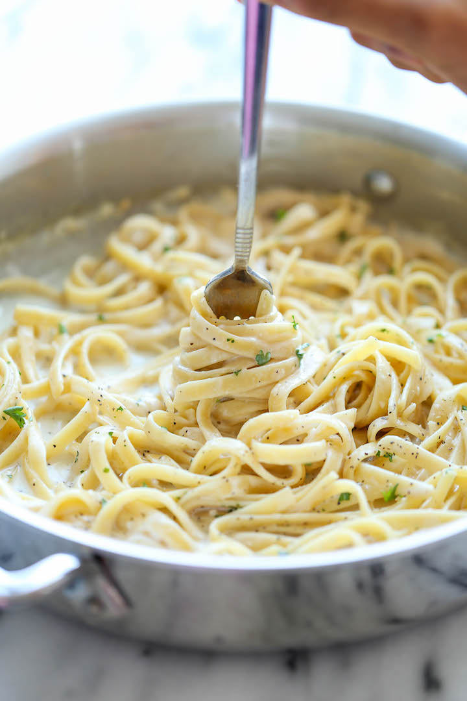

One Pot Garlic Parmesan Pasta

Description
The easiest and creamiest pasta you will make with minimal number of ingredients and even fewer dishes to do afterwards (which is always a win in my book). That way, you have more time in the day to do what it is you would rather be doing.
To take this dish to the next level, I suggest adding herbs like basil, a protein source of your choice (chicken, shrimp, tempeh), or some veggies (peas, broccoli, etc). Post your pictures and variations of this dish below!
Ingredients
- 2 tablespoons unsalted butter
- 4 cloves garlic, minced
- 2 cups chicken broth
- 1 cup milk, or more, as needed
- 8 oz uncooked fettuccine
- Kosher salt and freshly ground black pepper, to taste
- 1/4 cup freshly grated Parmesan
- 2 tablespoons chopped fresh parsley leaves
Steps
- Melt butter in a large skillet over medium high heat. Add garlic and cook, stirring frequently, until fragrant, about 1-2 min
- Stir in chicken broth, milk, and fettucine; Season with salt and pepper, to taste
- Bring to a boil; reduce heat and simmer, stirring occasionally, until pasta is cooked through (about 18-20 min). Stir in Parmesan. If the mixture is too thick, add more milk as needed until desired consistency is reached
- Serve immediately, garnished with parsley, if desired.